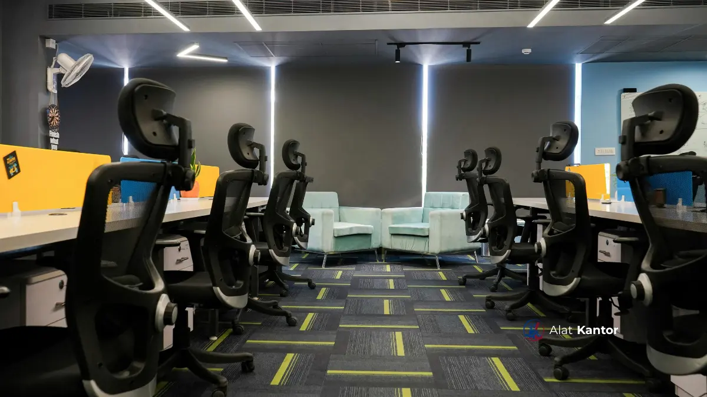

Poin Penting Sebelum Membeli Kursi Ergonomis
- Kursi ergonomis hidrolik memungkinkan penyesuai ketinggian secara cepat sesuai postur pengguna.
- Lumbar support dan sandaran jaring menjadi faktor penting untuk pemakaian jangka panjang.
- Kebutuhan kursi ergonomis berbeda antarwilayah, terutama terkait faktor pengiriman dan skala pengadaan.
- MAROON ATK melayani pengadaan kursi ergonomis di Jakarta, Surabaya, Malang, Denpasar, dan Makassar.
- Layanan gratis kirim dan perakitan terutama berlaku untuk wilayah Malang Raya.
Apa Itu Kursi Ergonomis dengan Mekanik Hidrolik?
Kursi ergonomis dengan mekanik hidrolik adalah kursi kerja bersistem pneumatik untuk mengatur ketinggian duduk secara instan, dipadukan dengan desain yang mendukung postur tubuh selama bekerja dalam waktu lama.
Kursi jenis ini umumnya dilengkapi lumbar support, sandaran mesh untuk sirkulasi udara, serta roda dan dudukan yang dapat diputar. Bagi staf yang bekerja lama di depan komputer, kursi ini membantu mengurangi risiko kelelahan otot punggung dibanding kursi kantor konvensional.

Faktor Apa Saja yang Perlu Diperhatikan Saat Memilih Kursi Ergonomis?
Beberapa faktor teknis berikut sebaiknya dipertimbangkan agar kursi ergonomis sesuai kebutuhan kerja dan anggaran instansi:
- Mekanisme hidrolik dan daya tahan, menentukan kelancaran penyesuaian ketinggian jangka panjang.
- Lumbar support, penting untuk menjaga postur punggung bagian bawah.
- Bahan sandaran, mesh cenderung lebih sejuk untuk iklim tropis dibanding kulit sintetis.
- Kapasitas beban, disesuaikan dengan rata-rata berat pengguna agar kursi tetap stabil.
- Garansi dan ketersediaan suku cadang, penting untuk pengadaan skala besar.
- Kemudahan perakitan dan pengiriman, khususnya bagi instansi di luar kota.
Kisaran harga kursi ergonomis dapat bervariasi tergantung spesifikasi, volume pesanan, dan lokasi pengiriman, hubungi tim kami untuk penawaran resmi.
Pertimbangan Pengadaan Kursi Ergonomis Berdasarkan Kota
Apa yang Perlu Diperhatikan saat Memilih Kursi Ergonomis di Jakarta?
Pengadaan kursi ergonomis di Jakarta umumnya perlu mempertimbangkan skala kebutuhan instansi yang besar serta jadwal pengiriman yang efisien mengingat kepadatan lalu lintas kota. Instansi di Jakarta sering membutuhkan pengadaan dalam jumlah besar sekaligus, sehingga koordinasi waktu instalasi menjadi penting agar operasional kantor tidak terganggu.
Apa yang Perlu Diperhatikan saat Memilih Kursi Ergonomis di Surabaya?
Kebutuhan kursi ergonomis di Surabaya umumnya berkaitan dengan pengadaan untuk kantor pemerintah daerah, kampus, dan perusahaan industri yang tersebar di berbagai kawasan kota. Faktor biaya pengiriman dari pusat distribusi menjadi pertimbangan yang perlu dikonsultasikan sejak awal proses pengadaan.
Apa yang Perlu Diperhatikan saat Memilih Kursi Ergonomis di Malang?
Kursi ergonomis di Malang mendapatkan keuntungan dari lokasi basis operasional MAROON ATK, sehingga proses pengiriman dan perakitan dapat dilakukan lebih cepat di wilayah Malang Raya. Instansi di wilayah ini umumnya mendapatkan layanan gratis kirim dan perakitan langsung oleh teknisi tanpa biaya logistik antarkota tambahan.
Apa yang Perlu Diperhatikan saat Memilih Kursi Ergonomis di Denpasar?
Pengadaan kursi ergonomis di Denpasar umumnya perlu mempertimbangkan karakteristik instansi pariwisata dan pemerintahan daerah yang membutuhkan kursi tetap representatif namun fungsional. Estimasi waktu pengiriman ke Denpasar perlu dikonsultasikan lebih awal karena melibatkan pengiriman lintas pulau.
Apa yang Perlu Diperhatikan saat Memilih Kursi Ergonomis di Makassar?
Kebutuhan kursi ergonomis di Makassar umumnya terkait pengadaan untuk instansi pemerintah provinsi dan kampus besar di kawasan Indonesia Timur. Sama seperti Denpasar, faktor jarak pengiriman lintas pulau perlu diperhitungkan dalam perencanaan waktu pengadaan.
Kursi Hidrolik vs Kursi Statis: Mana yang Lebih Tepat untuk Kantor?
| Aspek | Kursi Hidrolik | Kursi Statis |
|---|---|---|
| Penyesuaian ketinggian | Instan, fleksibel per pengguna | Tetap, tidak dapat disesuaikan |
| Kenyamanan jangka panjang | Lebih baik untuk kerja durasi panjang | Kurang ideal untuk durasi panjang |
| Cocok untuk | Ruang kerja staf, ruang rapat | Ruang tunggu, area duduk sementara |
Untuk ruang kerja staf harian, kursi ergonomis hidrolik umumnya menjadi pilihan yang lebih sesuai.
Lihat juga daftar kebutuhan dasar pada 10 Alat Tulis Kantor Wajib Ada untuk Produktivitas Tim, atau lanjutkan ke Panduan Pengadaan Smartboard 2026 untuk Sekolah dan Kantor Instansi.